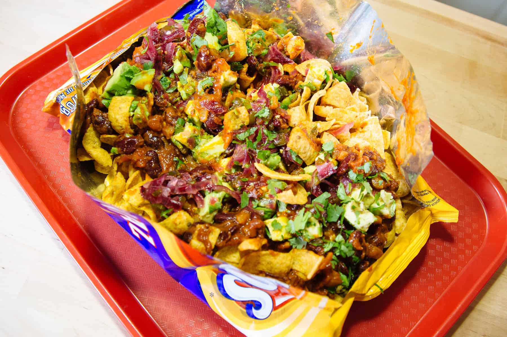

Frito Pie

Description
Frito pie is a cool and convenient treat.
- 1 large haas avocado
- 3 fresh jalepenos chopped
- 1/3 onion peeled and chopped
- 2 roma tomatoes chopped
- 1 bunch of fresh cilantro chopped
- 4 tablespoons of sour cream
- 2 limes
- 1 18 oz can of chili
- 1 18 oz can of cheese sauce
- 1 bag of large Frito scoops
Steps
- Peel and pit avocado and mash up with a fork.
- Warm up chili on the stove for 5-7 minutes on medium heat.
- Put cheese sauce into microwave safe bowl and warm up for 2 1/2 minutes. Stir halfway.
- Pour Frito scoops into a large bowl or plate.
- Pour chili over Frito chips and pour cheese sauce over Frito chips.
- Add the remaining ingredients as toppings to taste.